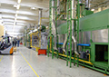

HOME
CONNECT
CLIP
AI
Nx Witness VMSについて
お問い合わせ
HOME
CONNECT
CLIP
AI
Nx Witness VMSについて
お問い合わせ
データと映像の連動よりビジネス価値を生む
FlaRevo CONNECT
現場とつながる。
現場が見える。
IoT時代の到来とともに、生産現場にはありとあらゆる情報があふれております。併せて監視カメラの導入も数多くの企業で利用されてまいりました。しかし、この2つのシステムが連動されることはなく、別々の仕組みで稼働することがほとんどです。
FlaRevo CONNECTでは、三菱電機製シーケンサを利用し、生産現場で数多く流れるデータとカメラ映像を連動させ、今までにないカメラのビジネス利用を提供いたします。
FlaRevo CONNECTを利用すれば、生産ラインの異常発生時にNx Witnessにアラートを表示させ、直接現場に行かなくても現場の映像を確認したり、アラートの一覧から過去映像を振り返ることも可能となります。
FlaRevo CONNECTは、従来の監視カメラでは成しえなかった新たな価値を、お客様に提供いたします。
利用シーン
CASE1
映像と現場機器をリンクする
現場に設置されたシーケンサの情報をNx Witness側で受け取り、現場の状況を遠隔で確認する事が可能です。
導入シーン
製造現場
三菱電機製シーケンサのパラメーターをトリガーにして起こった機器の異常やイベントを、Nx Witness上で確認することが可能です。現場に足を運ばずとも、状況を遠隔にてすばやく正確に確認する事が出来ます。

効果
機器の異常やイベント発生時に、何が起きているかをカメラ映像を通じて正確に確認する事可能です。状態把握にかかる時間が大幅に削減でき、復旧作業や、原因究明にかかる時間の短縮にも効果を発揮いたします。
CASE2
ブックマーク機能を使った履歴管理
シーケンサからの信号があった時間の映像を自動でブックマーク（Flag付け）することができ、あとから録画映像を確認する際に便利に利用することが可能です。
導入シーン
製造現場の生産性向上
ブックマークの一覧を参照することにより、機器信号発生前後の状況を簡単に振り返る事が可能です。現場で何が起きたかをすばやく確認することが可能です。
効果
異常状態の再確認や、その後の処理など、過去の振り返りを行う時に効果的です。また、ブックマーク映像をUSB等にエクスポートすることが出来るので問題発生時の重要な映像を財産化する事が可能となります。
※ FlaRevo CLIPを使えばブックマークからのエクスポートを自動化することが可能です。
特長
取り逃したくない瞬間や、保存しておきたい映像の取得を自動化できる
三菱電機製MX COMPONENTを利用しており、数多くのシーケンサをFlaRevo CONNECTにて扱うことができます。イーサネット接続をご利用であれば、今現在お客様にてお使いのシーケンサを対象にすることも可能です。
実際に映像を見たいタイミングをシーケンサからの指示で決めることができるので、取り逃したくない瞬間や、保存しておきたい映像の取得を、人の手を使わずに自動化させることが可能です。
パソコン映像も、カメラ同様にライブ再生・録画が可能
Nx Witnessは標準でI/O設定の利用ができ、サードパーティ製のソフトウェアを利用すれば、パソコン映像も、カメラ同様にライブ再生・録画が可能です。これに加えFlaRevo CONNECTを使えば、シーケンサのイベント、パトライトの信号、検査装置のPC画面、すべての映像を並べて遠隔で表示させることが可能です。
正確な情報の把握、振り返りに力を発揮いたします。
機器構成図
提供スペック
稼働OS
Microsoft Windows 8 / 10 ( 32bit / 64bit )
CPU
Intel Core i3（第9世代）相当 以上
メモリ
8GB以上
HDD
10GB 以上の空き容量
必要ソフトウェア
Nx Witness 3.2以上
Mx Component Version 4以上
※ シーケンサおよびMX Componentは三菱電機株式会社の登録商標です。
サポート体制
あんしんのサポートセンター
各種FlaRevoのご質問およびNx Witness上のご質問を受け付ける専用のサポートセンターをご用意しております。
全国対応
国内35拠点のネットワークを活かして、全国どこでもお伺いさせていただきます。
お問い合わせ
製品に関するお問い合わせ・資料請求
メールでのお問い合わせ
お電話でのお問い合わせ
03-5396-6415
受付時間 平日10:00～17:00
（※土曜・日曜・祝祭日を除く）